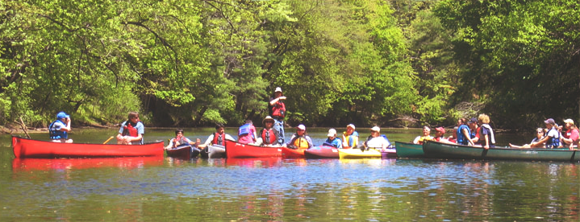

Employment Opportunities
River Camp Aquatics Director/ Canoe Trip Leader
River Camp is seeking a fun, enthusiastic, experienced canoeist/outdoor educator to lead our camp programs.
KEY QUALIFICATIONS: Besides a love of working with kids and the outdoors, candidates must be at least 21 yrs. old, have whitewater paddling experience, have or obtain lifeguard certification, and have an excellent driving record. (See job description for more qualifications)
Job Description: Aquatics Director/ Canoe Trip Leader
To apply, please complete an application and submit it along with a resume and cover letter to:
diane@nashobapaddler.com
OR